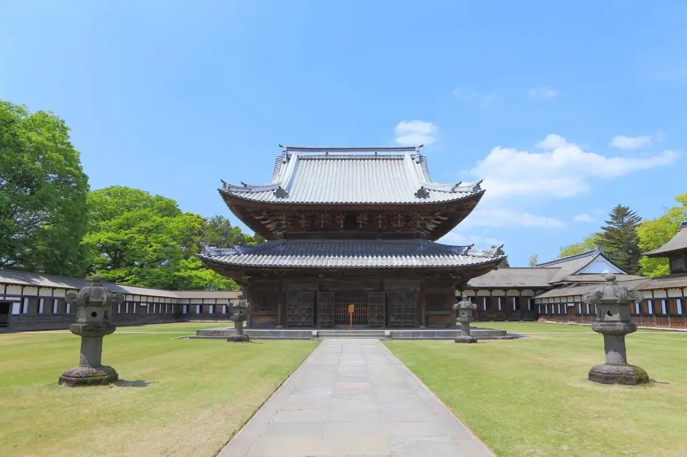
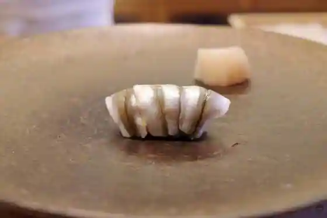
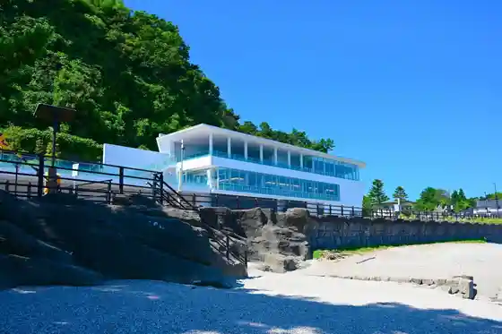

Japan / Toyama / Takaoka
Takaoka · Toyama
Takaoka
Highlighted on the Toyama map.

Takaoka City Hall


Sights · Things to do · Places to eat · Places to stay · Day-to-day services
Nearby in Toyama: ← Oyabe · Tateyama →
Other towns: Asahimachi · Funahashi · Himi · Imizu · Kamiichi · Kurobe · Namerikawa · Nanto · Nyuzen · Oyabe · Tateyama · Tonami · Toyama · Uozu
All towns in Toyama · Back to all prefectures